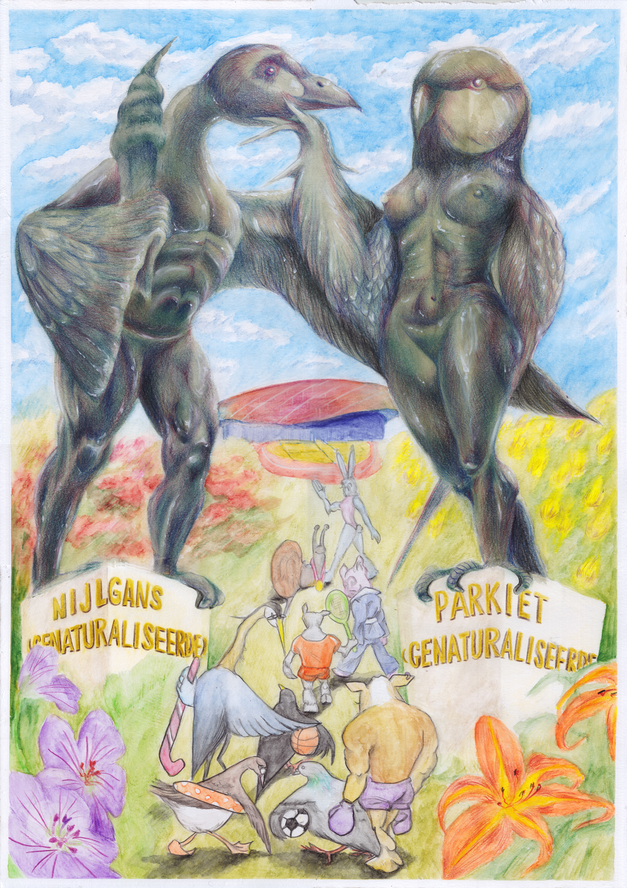

Statues in Transition
In my drawing, the statues in front of Zuiderpark in The Hague (“Vrouw en Man”) are transformed into mutants: the man with the torch morphs into an Egyptian goose, while the woman with the bird landing on her hand becomes a parakeet. Instead of the original ideals of “victory” and “speed” the statues once symbolized, the mutated forms now represent adaptation and naturalisation—both the Egyptian goose and the parakeet are exotic species that have found their place in the Netherlands. In the foreground and background, a procession of animals that inhabit Zuiderpark are welcomed by the two statues and walk toward Sportcampus Zuiderpark, dressed in all kinds of sports outfits and gear. Zuiderpark is surrounded by multicultural neighborhoods where around 80 percent of residents have a migration background. It provides leisure, sports, and open space for all kinds of people; it is also home to a wide variety of animal and plant species. In my drawing, I want to highlight these two aspects.
Medium
Water color and color pencil on paper,
A2
Edition
Press
Den Haag Central 2025-06-05
Stadstekenaar
